I’ve been actively building a portable version of the RAIN Mark II Personal Supercomputer for about a month now. I was going to wait until the work was complete to write a post about it, but it’s going so well that I don’t want to wait any longer to talk about it.
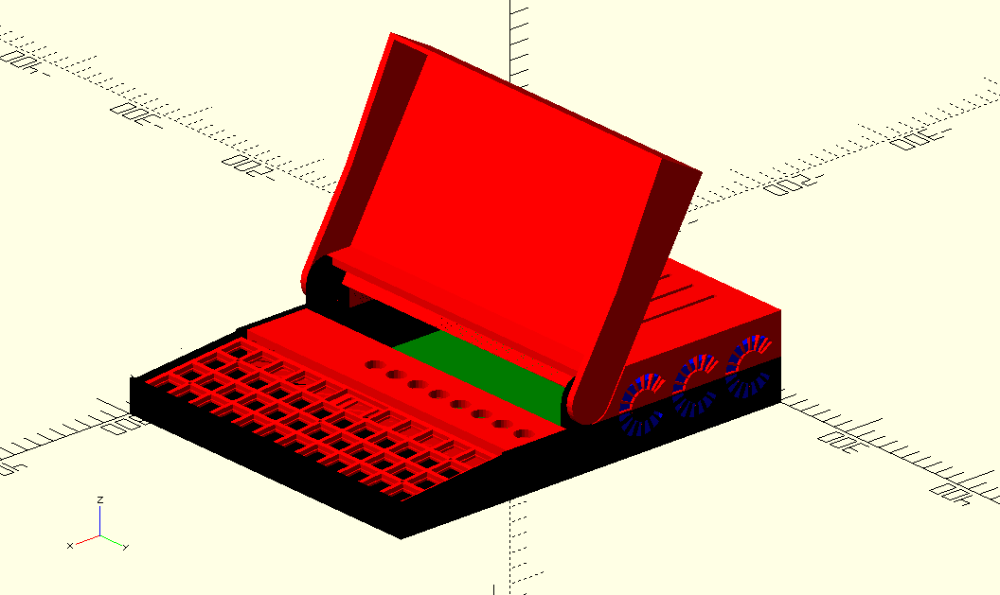
I first dabbled with the idea of building a portable version of RAIN Mark II way back when I was designing the original desktop model. I found that I only worked on the machine when I was in the laboratory where it was located, and I wanted a way to make it easy to work on outside the lab. I also thought it would be fun to cram an entire compute cluster into a laptop, and after sketching a few things I figured out it might fit inside something the size of an A4 rectangle.
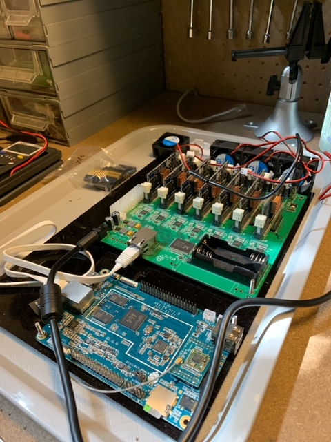
I made some early attempts at building the machine out of a hybrid of laser-cut acrylic and 3D parts because the printers I had at the time didn’t have the build volume I needed to print all the parts. I came up with some clever designs to work-around these limitations but ultimately it became unmanageable so I shelved the project.
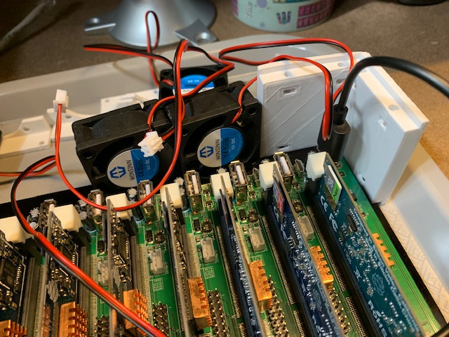
Now that I have a printer with sufficient capacity I decided to give it another go.
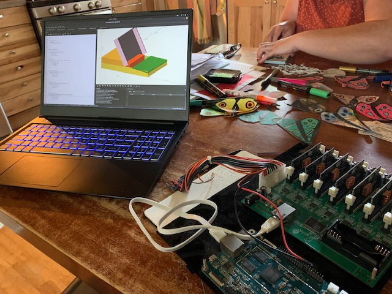
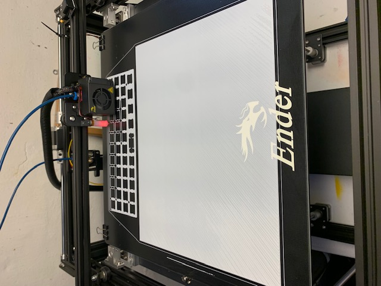
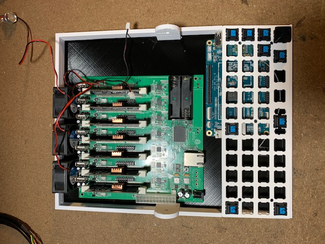
Things went a lot faster this time. It became clear that the original A4 footprint would be too narrow to hold the type of keyboard I had in mind. I’ve always known I wanted something with Cherry MX Blue switches but I hadn’t settled on a layout. After considering many options I decided to go with a PLANCK layout as I’ve long wanted to try an ortholinear keyboard and the size was almost perfect. I say almost because the PLANCK was a little too wide to keep the A4 footprint, so I had to bump it up a little.
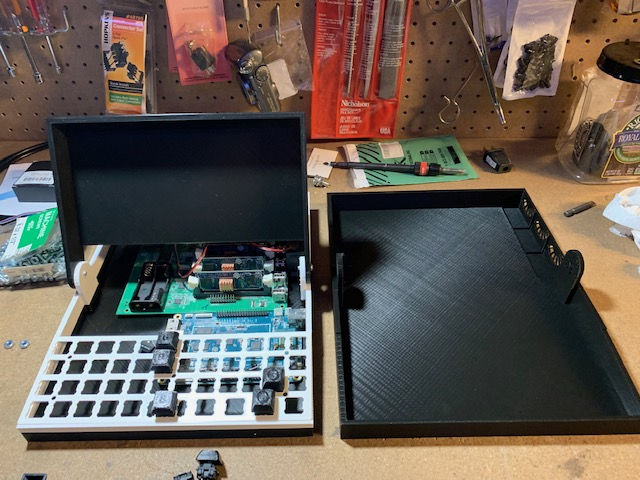
Another compromise is the LCD. My original plan was to use one from Pine64 which used the DSI interface, but it is perpetually out of stock. Instead I settled for an HDMI display from Waveshare which works well enough even if it is a bit more bulky and burns the HDMI port (I was hoping to save that to allow external display attachment).
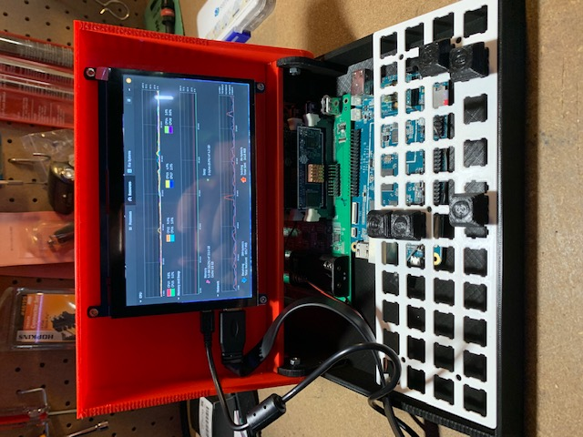
Around this time things were starting to get cramped and I reconsidered using a full-size Pine64 board for the head node. After considering several options from my inventory I settled on a Raspberry Pi Zero W. I originally rejected this idea because it has no Ethernet port, but decided to treat it more like a “dumb terminal” and attach it to one of the SOPINE modules via serial instead of to the Clusterboard’s Ethernet switch.
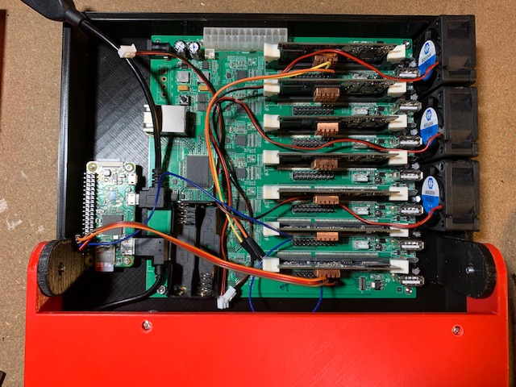
Aside from saving space, this also frees-up the Clusterboard’s one Ethernet port for connection to an external network at 1Gbps (previously only WiFi was an option). Along with this I decided to drive the keyboard directly from the Pi0W GPIO, eliminating the need for another microcontroller and associated USB wiring.
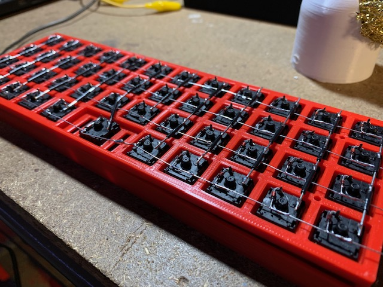
Originally I thought I would have to use something clumsy like a Python script to drive the keyboard this way but then I found a project that sets a GPIO keyboard like this up as a proper Linux device.
As an aside, I’m planning to spin this keyboard+Pi0 setup off as a side project so it can be re-used for other computer projects that need a serial terminal interface.
I’ve also created a “control panel” which is placed below the display and above the keyboard.
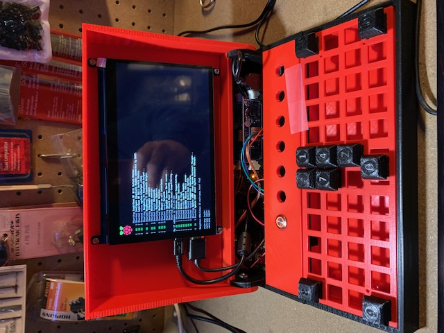
It holds 7 illuminated momentary switches connected to each SOPINE module to indicate that the node is running and allow manual power on/off of each. Additionally there is one “latching” push button which serves as the master power switch for the entire machine.
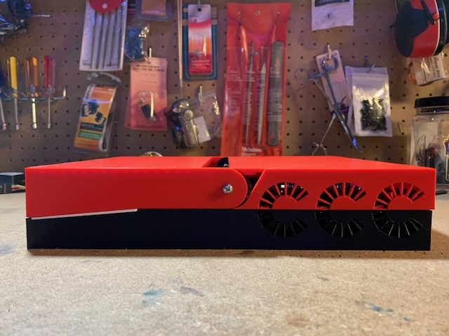
At this point I’ve completed at least an initial version for all parts of the case. What remains is the display bezel and some work on parts around the hinge. I think I have a clever way to hold the entire thing together with two “on-theme” thumbscrews as well, I just need to spend some more design time on them.
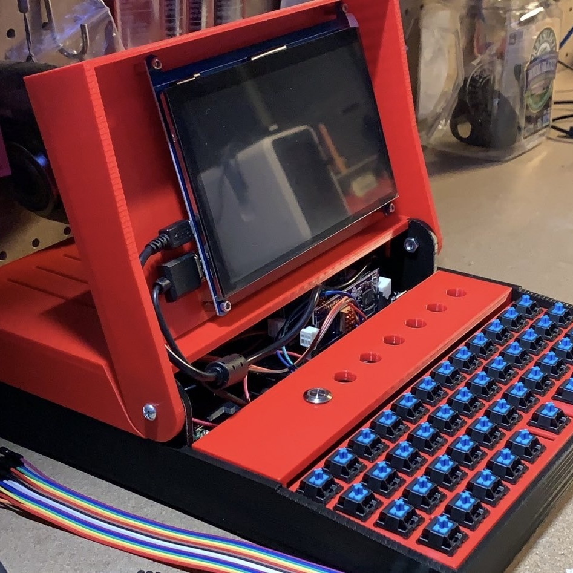
Electrically I have the fans and initial power switch wired (waiting on parts for the rest) as well as the head node, Clusterboard and display.
The keyboard matrix is complete and the next step is to wire the GPIO connections and work on configuring the driver software.
One major remaining piece of electronics work is the battery power supply. I haven’t had much luck finding anything that works the way I want it off-the shelf, and the maximum power needs of the cluster rules-out most existing supplies, so I’ll probably need to make this from “scratch”. So for now it is still “portable”, but not completely “mobile”.
I’m really excited to finish-up the keyboard because once that’s done the machine will be completely self-contained. Then I’ll work on upgrading the various printed parts as well as the basic operating system. In-between I’ll work on the power supply, but I’d like to do some load testing to get realistic measurements of the power needs before committing to components and getting PCB’s made.
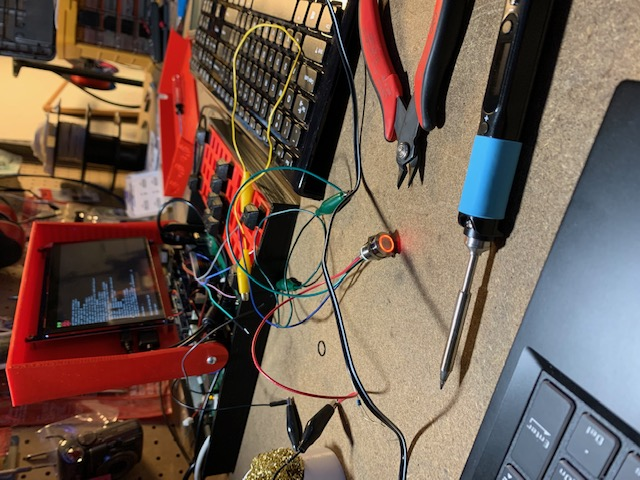
If you’d like to follow along, the project is hosted on my personal repository server and occasionally mirrored on Github.